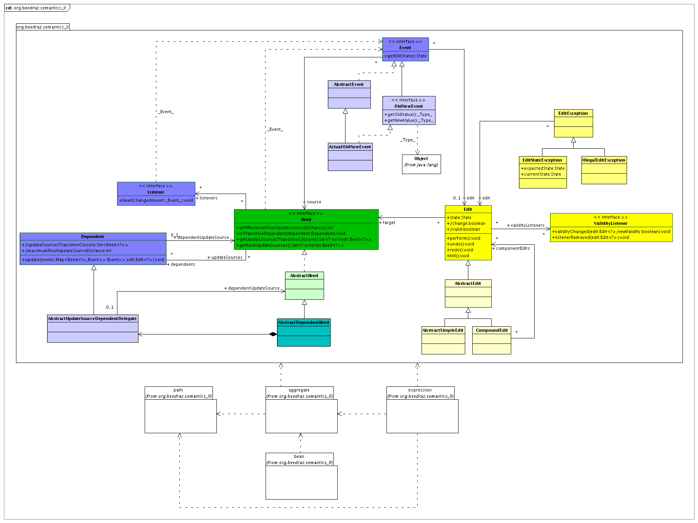

The package org.beedraz.semantics_II contains the core framework of Beedraz. The core framework consists of 3 interconnected parts:

These parts are gathered in one package, org.beedraz.semantics_II, because they mutually dependent, and use package accessible methods to communicate.
Subpackages are used for parts of Beedraz that are not mutually dependent on beeds, notification and update, and edits.
What is general about beeds is defined in the interface {@link org.beedraz.semantics_II.Beed}. In code, what is general to beeds, is only support for the notification and update framework. Other common points are only on the level of design, patterns and idioms, and are described in the documentation of {@link org.beedraz.semantics_II.Beed}. There are no other interfaces in the general beed framework.
In {@link org.beedraz.semantics_II.AbstractBeed}, most of the methods defined in {@link org.beedraz.semantics_II.Beed} are implemented. {@link org.beedraz.semantics_II.AbstractDependentBeed} adds support for beeds that depend on other beeds (operands) for their semantic state.
Beeds implement the classic Model - View -Controller (a.k.a. Oserver - Observable, a.k.a. MVC) design pattern with {@link org.beedraz.semantics_II.Listener}. To update dependent beeds, a topological algorithm is needed. This is implemented using {@link org.beedraz.semantics_II.Dependent}. A separate document describes the need for the topological algorithm, and the implementation.
The exact nature of a change is communicated to {@link org.beedraz.semantics_II.Listener Listeners} and {@link org.beedraz.semantics_II.Dependent Dependents} using an {@link org.beedraz.semantics_II.Event}. {@link org.beedraz.semantics_II.Event} is an interface, because multiple inheritance is needed for events. {@link org.beedraz.semantics_II.AbstractEvent} holds the implementations of the interface methods that are common for all events. {@link org.beedraz.semantics_II.OldNewEvent} is an often used kind of event, that can be used where the change is easily described as the state before the change (old) and the state after the change (new), if the state is a simple object reference. {@link org.beedraz.semantics_II.ActualOldNewEvent} is an implementation of {@link org.beedraz.semantics_II.OldNewEvent} that can be used directly.
How a dependent beed deals with update sources is largely common for all dependent beeds, and is generalized in {@link org.beedraz.semantics_II.AbstractDependentBeed}. This implementation uses {@link org.beedraz.semantics_II.AbstractUpdateSourceDependentDelegate} internally.
{@link org.beedraz.semantics_II.TopologicalUpdate} contains the topological update algorithm in static methods. The Beedraz code supports a limited form of profiling of the topological update algorithm. Timing information is gathered in {@link org.beedraz.semantics_II.TopologicalUpdateTiming}. Since the dependency beed structure is the most interesting part of the semantic structure, and it can get quite complex, it is sometimes interesting during development to get a graphical representation of the dependency graph. {@link org.beedraz.semantics_II.UpdateSourcesGraph} offers methods to write a .dot file to disk, which can then be visualized using GraphViz, e.g..
{@link org.beedraz.semantics_II.Edit Edits} are the reified form of mutators in Beedraz. Core semantic state of editable beeds cannot be changed directly via mutators in Beedraz, but has to be changed through {@link org.beedraz.semantics_II.Edit Edits}. {@link org.beedraz.semantics_II.Edit Edits} implement the classic Command design pattern. They are also the core support for undoability, in a way similar to how undoability is defined in {@linkplain javax.swing.undo.UndoableEdit Swing}, but not entirely the same.
{@link org.beedraz.semantics_II.Edit Edits} throw an {@link org.beedraz.semantics_II.IllegalEditException} if you try to perform (or undo or redo) a change that would render the semantic state of the application invalid. But it is the intention of Beedraz that end users are never faced with semantic error dialogs. Rather, we would like to warn the user beforehand that an input is invalid, and block execution buttons or other UI execution methods when the input is not valid. The user then goes, during input, through valid and invalid phases. The {@link org.beedraz.semantics_II.Edit} decides whether a given user input would lead to a valid or invalid semantic state, and thus must be able to warn the UI in some way about the validity and changes in the validity. That is why {@link org.beedraz.semantics_II.Edit} implement the MVC pattern themselves. Parties interested in validity changes of an {@link org.beedraz.semantics_II.Edit}register a {@link org.beedraz.semantics_II.ValidityListener} with the {@link org.beedraz.semantics_II.Edit}. Since the data we are interested in is merely a boolean, there is no event object involved in this MVC implementation.
{@link org.beedraz.semantics_II.Edit} is a class, and not an interface, because package accessible methods are required. The core edit protocols (perform, undo, redo) are implemented as template methods in {@link org.beedraz.semantics_II.Edit}, with limited genericity useful for users. Genericity that is interesting for implementation reasons is implemented in {@link org.beedraz.semantics_II.AbstractEdit}. {@link org.beedraz.semantics_II.AbstractSimpleEdit} adds support for edits for editable beeds that express their semantic state as a simple, single reference. {@link org.beedraz.semantics_II.CompoundEdit} implements a sequence of element edits as an atomic unit. {@link org.beedraz.semantics_II.IllegalEditException} and {@link org.beedraz.semantics_II.EditStateException} are exceptions used by {@link org.beedraz.semantics_II.Edit Edits}, with common code generalized in {@link org.beedraz.semantics_II.EditException}.
The subpackages of org.beedraz.semantics_II are concerned with core implementations of the Beedraz framework. A Beedraz semantic beed structure is object oriented: it features "objects" that have "attributes" and "associations" (or "properties" in general), which might be basic or derived.
Objects in Beedraz are called beans. Beedraz bean behavior is defined in {@link org.beedraz.semantics_II.bean}.
In fact, Beedraz beans are technically just a form of aggregate beeds, which is the Beedraz component model: a beed can be made be aggregation of other, aggregate element beeds. See {@link org.beedraz.semantics_II.aggregate} for more information.
Attributes and associations, or properties, are a use of Beedraz expressions. Attributes and associations are merely Beedraz expressions that are public instance variables or public Java properties of Beedraz beans. Dependent state, which would be implemented in a traditional OO program with inspectors, is build declaratively in Beedraz with an explicit abstract syntax tree of which the nodes are expression beeds. org.beedraz.semantics_II offers expression beeds for the primitive and basic Java value types in {@link org.beedraz.semantics_II.expression}. More elaborate expression beeds can be found in other projects.
Expression beeds are usually beeds that derive their semantic state from some sort of operands, with a calculation. When one of the operands changes, the semantic state of the current beed might change too. The operands are other expression beeds which are reached over the beed structure (e.g., the name of the file to save something in, is a concatenation of a local name and the name of a folder of which the current bean is an element, which is an attribute of another bean). Because the beed structure itself can change (beeds are related using association expression beeds), the semantic state of the current beed might also change when an association in the path between the current beed and one of its operands change. In effect, the current beed gets another operand (e.g., when the current bean moves from one folder bean to another; the concatenation then needs to use another StringBeed, of another folder bean, as operand). For this reason, dependent expression beeds are not associated with their operands directly. We do not set the operands on expression beeds, we give Paths to reach the operands to the dependent expression beeds. Paths are themselves a kind of {@link org.beedraz.semantics_II.Beeds}. The path framework is defined in {@link org.beedraz.semantics_II.path}.
| Revision | $Revision$ |
|---|---|
| Date | $Date$ |
Copyright 2007 - $Date$ by the Beedraz authors.
Licensed under the Apache License, Version 2.0 (the "License"); you may not use this file except in compliance with the License. You may obtain a copy of the License at http://www.apache.org/licenses/LICENSE-2.0
Unless required by applicable law or agreed to in writing, software distributed under the License is distributed on an "AS IS" BASIS, WITHOUT WARRANTIES OR CONDITIONS OF ANY KIND, either express or implied. See the License for the specific language governing permissions and limitations under the License.